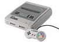
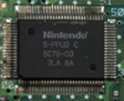

Super Nintendo Entertainment System (SNES)
Super Nintendo Entertainment System A versão norte-americana (topo) e europeia e japonesa (baixo) do consoleDesenvolvedorNintendo Research & Development Fabricante Nintendo Tipo Console de Mesa Geração 4ª geração Lançamento
Preço inicial JP¥ 25.000 US$ 199 Descontinuado
Unidades vendidas 49 milhões Mídia Cartucho CPURicoh 5A22 a 3,58 MHz GráficosRicoh 5C77-01(S-PPU1) e 5C78-03(S-PPU2 C) Controladores1 a 6 gamepads ConectividadeModem (via XBAND ou Satellaview) Serviços on-lineSatellaview (somente no Japão) Jogo mais vendido
|
Super Nintendo Entertainment System, (Super NES ou SNES ou Super Nintendo) é um console de videogame de 16 bits desenvolvido pela Nintendo que foi lançado em 1990 no Japão, 1991 nos Estados Unidos, 1992 na Europa e Australásia (Oceania) e América do Sul em 1993. No Japão, o sistema é chamado de Super Famicom (em japonês: スーパーファミコン, transl. Sūpā Famikon), oficialmente, adotando o nome abreviado do seu antecessor, o Famicom), ou SFC para breve. Na Coréia do Sul, é conhecida como a Super Comboy e foi distribuído pela Hyundai Electronics. Embora cada versão é essencialmente o mesmo, várias formas de bloqueio regional impedem as diferentes versões sejam compatíveis entre si.
O Super Nintendo Entertainment System é o segundo home console da Nintendo, sucessor do Nintendo Entertainment System (NES). O console apresentou gráficos e recursos de som avançados em comparação com outros consoles na época. Além disso, o desenvolvimento de uma variedade de chips de aprimoramento (que foram integrados em placas de circuito) ajudou a mantê-lo competitivo no mercado. Enquanto brutos gráficos tridimensionais raramente tinham sido vistos antes em consoles domésticos, utilizando o chip Super FX começando com Star Fox em 1993, o SNES foi capaz de rodar jogos com gráficos tridimensionais suave e mais detalhados do que era anteriormente possível. Isso despertou interesse mais difundido em gráficos de polígono na indústria, ajudando a inaugurar em gráficos 3D, como pode ser visto na quinta geração de consoles de videogame.
O SNES foi um sucesso mundial, tornando-se o console mais vendido da época apesar de seu início relativamente tardio e a competição feroz que enfrentou na Europa e América do norte. O SNES permaneceu popular até a era de 32 bits e continua a ser popular entre os fãs, colecionadores, retro gamers e entusiastas de emulação, alguns dos quais ainda estão fazendo imagens ROM homebrew. O sucesso de sua venda foi superior a 50 milhões de unidades por todo o mundo. O SNES foi oficialmente descontinuado em setembro de 1999 nos Estados Unidos, e em setembro de 2003, no Japão. O último jogo oficialmente lançado para a plataforma foi Metal Slader Glory: Director's Cut tendo lançado exclusivamente no Japão em novembro de 2000.
História
Tudo começou quando a NEC decidiu competir com o famoso NES, lançando o videogame TurboGrafx-16 em Outubro de 1987. Já a SEGA, lançou o videogame Mega Drive em 1988. Como os dois videogames tinham processadores de 16-bits, mais avançados que o NES, a Nintendo decidiu unir as forças para lançar um videogame com o novo sistema, criando assim o sucessor do Nintendo (Famicom no Japão) batizado com o nome de Super Nintendo (Super Famicom no Japão).
O SNES foi lançado ao fim de 1990 no Japão, nos EUA em Novembro de 1991 e depois em 1992 na Europa. A versão européia do console (lançado em 1992) é visualmente idêntica ao modelo japonês. O controle também é praticamente idêntico, com botões coloridos, porém na Europa o sistema de cores do console é PAL, enquanto no Japão e Estados Unidos é NTSC.
No Brasil, o console chegou oficialmente apenas em 30 de agosto de 1993, fabricado pela Playtronic (uma joint-venture entre duas empresas, a Gradiente e a Estrela), representante oficial da Nintendo no país na época, já em versão transcodificada para PAL-M, sendo fabricado por muitos anos em Manaus, até a saída da Gradiente do ramo, em 2003.
A Nintendo garantiu seu sucesso no Japão especialmente por manter velhos parceiros, como Capcom, Konami, Tecmo, Square, Koei e Enix, que mantinham a exclusividade da Nintendo de séries como Mega Man, Final Fantasy e Dragon Quest. Nos Estados Unidos, o Super NES começou cambaleando, mas logo ultrapassou em vendas seu principal concorrente, o Mega Drive, graças a jogos como Super Mario World, The Legend of Zelda: A Link to the Past, Street Fighter II: The World Warrior, Super Metroid, Mortal Kombat II, e os jogos das séries Final Fantasy, Dragon Quest e Donkey Kong Country, consolidando-se, assim, como o maior nome da era 16-bits.
O Super NES e Super Famicom foram lançados com apenas alguns jogos, mas esses jogos foram bem recebidos no mercado. No Japão, apenas dois jogos estavam disponíveis no lançamento: Super Mario World e F-Zero. O primeiro, estrelado pelo mascote Mario, costumava acompanhar o console nas vendas e contabilizou 20 milhões de cópias. O segundo contabilizou 2,85 milhões e deu início a mais uma série da Nintendo. Na América do Norte, Super Mario World e outros títulos iniciais incluindo F-Zero, Pilotwings (ambos demonstraram a capacidade de renderização pseudo-3D do console "Mode 7", sendo o ultimo com auxílio de um chip co-processador de nome DSP-1, o mesmo usado em Super Mario Kart), SimCity e Gradius III.
O Super NES foi sucedido pelo Nintendo 64 em 1996.
Versões
Versão japonesa (Super Famicom), 1990-1997 | Versão americana, 1991-1997 |  Versão européia, 1992-1998 | Super Famicom Jr, 1997-1999 | SNES Baby, 1997-2003 |
Todas as versões do Super NES são predominantemente cinzas, embora o formato possa diferir. A versão original norte-americana possui dois interruptores roxos e um cavidade pressionável cinza-médio para ejetar cartuchos. As versões europeia e japonesa são mais arredondadas, com interruptores e botões cinza. O norte-americano SNES Baby e o japonês Super Famicom Jr. são, ambos, menores e com contorno arredondado. Entretanto, os botões do SNES 2 são roxos enquanto os do Super Famicom Jr. são cinza-escuro.
Todas as versões possuem o encaixe para cartucho na parte superior, embora o formato deles sejam diferentes para se adequar as formas dos cartuchos distribuídos nos respectivos países. O conector possui 62 contatos, entretanto muitos cartuchos utilizam apenas os 46 centrais. Todas as versões incorporam também duas conexões de sete pinos para controles na parte frontal, uma conexão para fonte de alimentação e uma conexão com a TV.
A conexão com a TV se dá através do conector Multi-AV ou do conector RF. O segundo modelo lançado possui ou conexão Multi-AV(consoles produzidos no Estados Unidos) ou conexão RF(consoles nacionais), em contraste com o primeiro que possuía as duas simultaneamente.
A conexão Multi-AV é a mesma usada no Nintendo 64 e no GameCube e pode transmitir sinais de vídeo composto, RGB(via cabo SCART ou RGB-JP) e S-Video no primeiro modelo. No segundo modelo, os aparelhos com saída Multi-AV só podiam transmitir vídeo composto, pois os outros sinais eram fisicamente desconectados do processador de vídeo, tendo como foco desta modificação, o corte de custos na produção, pois o segundo modelo foi criado com esta intenção.
Era 32 bits
Enquanto outras empresas estavam se movendo para sistemas de 32 bits, Rare e Nintendo provaram que o Super NES ainda era um forte concorrente no mercado. Em 1994 foi o ano do auge do Super Nintendo, pois foi o ano com maior número de jogos lançado para o console e em novembro de 1994, a Rare, com autorização da Nintendo lançou o revolucionário Donkey Kong Country, um jogo de plataforma com modelos e texturas pré-renderizados em 3D, criados nas estações de trabalho da SGI. Com seus gráficos detalhados, animação fluida e música de alta qualidade, Donkey Kong Country rivalizava com a qualidade estética dos jogos que estavam sendo liberados em consoles mais recentes e que esbanjavam a maior capacidade de armazenamento, devido o uso dos CDs nos consoles de 32 bits (como o Sega Saturn, Sony Playstation e o 3DO). Nos últimos 45 dias de 1994, o jogo vendeu 6,1 milhões de unidades (9 milhões até hoje), se tornando o jogo mais vendido na história até neste ponto. Este jogo enviou uma mensagem que os primeiros sistemas de 32 bits que não aparentavam ser tão diferentes em comparação ao Super NES e ajudaram a dar uma sobrevida de mais 2 anos ao console. Este episódio abriu caminho a ideia de que as produtoras deveriam utilizar os consoles de maneiras cada vez mais criativas e mais eficientes.
Controles
Seu formato básico incluía um direcional digital, 4 botões em cruz (A, B, X e Y), 2 botões na parte superior (R e L) e 2 botões ao centro (START e SELECT).
Foi o primeiro controle a trazer "botões de ombro" (shoulder buttons) nas bordas, chamados L e R (L''eft e R''ight - Esquerda e Direita). Geralmente são usados para movimentar a câmera de jogo, mas também possuem outras funções dependendo do jogo em questão. Todos os consoles seguintes copiaram esses botões (notavelmente, o Playstation duplicou os botões de ombro).
Havia também uma peculiaridade nos botões em cruz. Os superiores (dado a inclinação da cruz), Y e X, possuíam formato côncavo, enquanto os inferiores convexo. Tal formato tornava a jogabilidade mais prazerosa em jogos como Super Mario World e Donkey Kong Country, em que o botão superior Y ficava permanentemente pressionado para dar velocidade, e o botão inferior era usado simultaneamente para outras funções (no caso dos dois jogos mencionados, o pulo).
A versão japonesa/européia do aparelho traz os botões em cruz em quatro cores diferentes: verde, azul, amarelo, vermelho, respectivamente aos botões Y, X, B e A, enquanto na versão norte-americana, os botões côncavos Y e X tinham coloração lilás e os botões convexos B e A azul marinho.
Especificações Técnicas | |||||
CPU | GPU | ||||
Western Design Center | CMD/GTE 65C816 customizado(CISC) |  | Ricoh 5C77-01 e 5C78-03 | S-PPU1 e S-PPU2 | |
Frequência de clock: 1.79MHz, 2.68MHz ou 3.58 MHz (variável) | Lisura: | Frequência de clock: 2.56 MHz 16 bits | Lisura: | ||
Barramento: 16 bits | |||||
| |||||
Áudio | Mídia | ||||
Sony | SPC700 | Cartucho | |||
Canais de áudio: 8 | Capacidade normal: 6Mb+ | ||||
| |||||
Periféricos
O Super NES teve muitos acessórios:
- Super NES Mouse: lançado em 1992, é bastante semelhante a um mouse comum utilizado em computador. Tem dois botões e vem com um mousepad rígido para suporte. É ligado na mesma entrada do controle comum, e compatível com dezenas de jogos para Super NES. O mais conhecido deles é Mario Paint.
- Super Scope: arma de luz semelhante ao Nintendo Zapper do NES, foi lançada em 1992. Uma inovação sem fio e com mira telescópica.
- Super Game Boy: adaptador que permite jogar cartuchos de Game Boy no SNES. Alguns inclusive com suporte a cores.
- Satellaview: modem exclusivo do Japão, inserido na parte de baixo do console. Funcionou de 1995 a 2000.
A Nintendo planejou um periférico de CD para o SNES que iria se chamar SNES-CD (assim como o Sega CD para o Mega Drive), mas as negociações com Sony e Philips não funcionaram e as duas lançaram os próprios consoles baseados nos periféricos não lançados: PlayStation e CD-i respectivamente.
Chips Auxiliares
Os chips vinham em alguns cartuchos e faziam uma grande diferença nos jogos, melhorando significativamente a parte gráfica e sonora.
- Super FX: Utilizado em Star Fox (o primeiro jogo eletrônico para Super Nintendo que utilizou este processador auxiliar), Stunt Race FX e Vortex;
- Super FX2: Utilizado em Doom e Super Mario World 2: Yoshi's Island;
- Nintendo SA-1: Utilizado em Super Mario RPG, incrementando o efeito gráfico 3/4;
- Cx4: Utilizado em Megaman X2 e Megaman X3;
- DSP: Utilizado em Super Mario Kart e Pilotwings;
- DSP-2: Utilizado em Dungeon Master;
- DSP-3: Utilizado em SD Gundam GX;
- DSP-4: Utilizado em Top Gear 3000;
- GB-Z80: Utilizado no Super Game Boy;
- MX15001TFC: Utilizado somente no Japão, esse FlashROM era usado para gravar jogos neles, que eram vendidos em quiosques, similar ao que foi feito com o Famicom Disk System;
- OBC-1: Utilizado em Metal Combat: Falcon's Revenge;
- S-RTC: Utilizado em Daikaijuu Monogatari II apenas como um relógio em tempo real;
- SPC7110: Utilizado em Tengai Makyou Zero, também era um relógio em tempo real.
- S-DD1: Utilizado em Street Fighter Alpha 2 e Star Ocean.
- ST: Criado pela SETA Corporation, essa série de chips era exclusiva de seus jogos: ST010 (F1-ROC: Race Of Champions, para gerar a AI dos carros), ST011 (Hayazashi Nidan Morita Shogi, para gerar a AI do jogo) e ST018 (Hayazashi Nidan Morita Shogi 2)
Jogos
No total foram lançados 1757 jogos oficialmente para o console, sendo 721 na América do Norte, 517 na Europa e 1.448 no Japão, 231 jogos foram lançados no formato digital para o Satellaview.
Os jogos eram lançados em cartuchos chamados de Game Pak no ocidente e Cassette no Japão com o total de 128 Mbit de memória, sendo 117.75 Mbit disponíveis, o formato dos cartuchos é diferente nas versões da América do Norte para os do Japão/Europa.
Emulação
Projetos para emular o Super Nintendo começaram com o lançamento do VSMC em 1994 e Super Pasofami se tornou o primeiro emulador de SNES funcional em 1996. Durante esse tempo, também surgiu uma nova iniciativa chamada Snes9x. Em 1997, começaram os trabalhos para o emulador chamado ZSNES.
Nintendo of America alega que o uso de ROMS e emuladores para o SNES é pirataria.
Emulação do SNES está agora disponível em aparelhos portáteis, como celulares Android, Iphone e Ipad da Apple, PSP da Sony, Nintendo DS e Game Boy Advance da Nintendo. Com a introdução do Virtual Console para o Wii, pode-se dizer que foi o início da emulação oficializada, mesmo que exista um emulador de SNES para o próprio Wii, o SNES9x GX.
Sem comentários